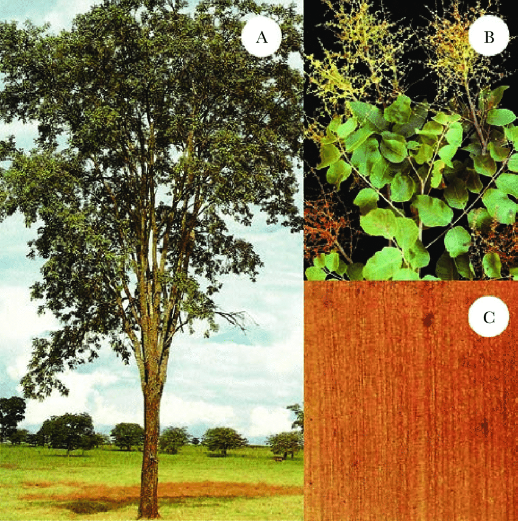
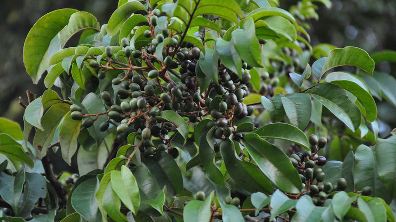
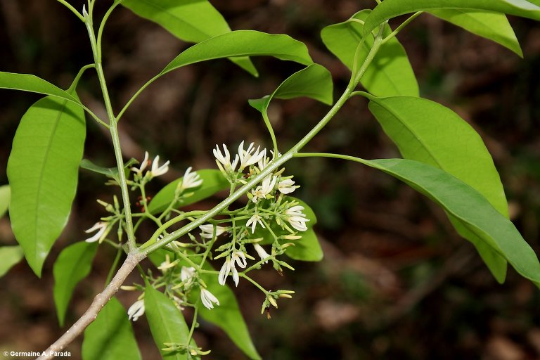

Conheça algumas das principais espécies nativas e suas características.

Nome Científico: Myracrodruon urundeuva
Distribuição: Ceará até Paraná e Mato Grosso do Sul
Frutificação: Semente
Floração: Junho - Julho
Altura Média: 24m

Nome Científico: Tapirira guianensis
Distribuição: Todo território brasileiro
Frutificação: Semente
Floração: Agosto - Dezembro
Altura Média: 30m

Nome Científico: Aspidosperma cylindrocarpo
Distribuição: Bacia do Rio Paraná
Frutificação: Semente
Floração: Setembro - Novembro
Altura Média: 40m